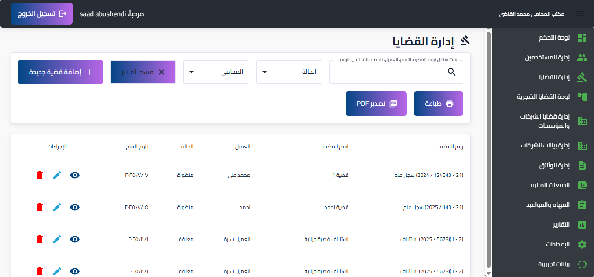
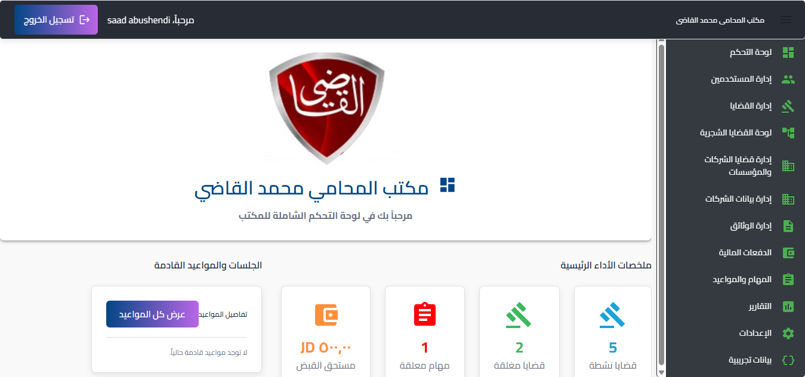
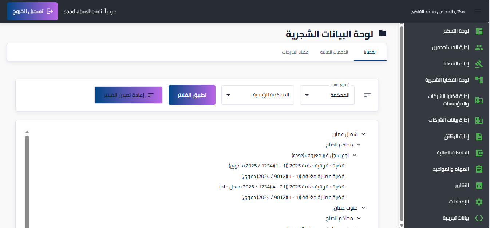
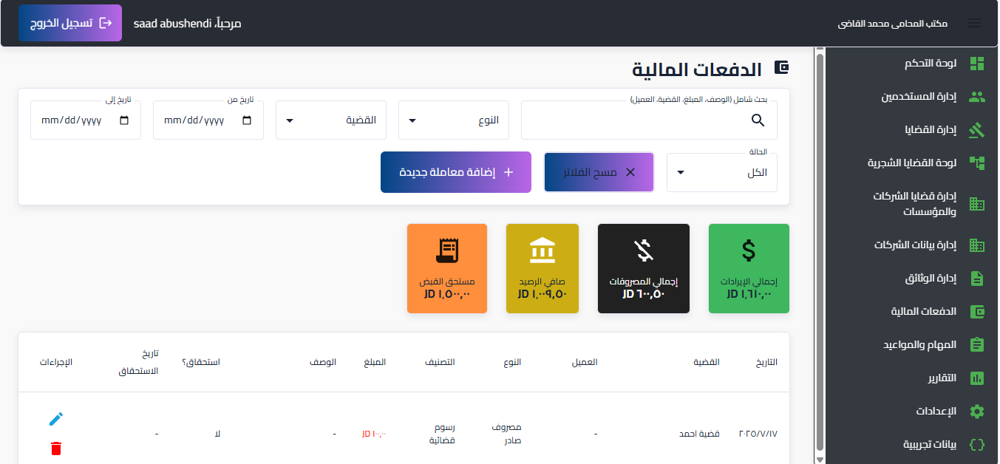
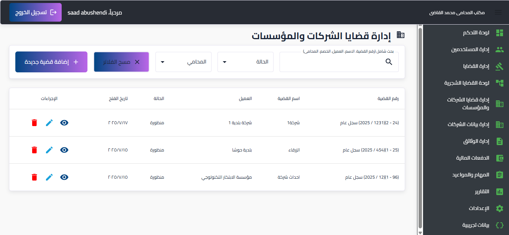
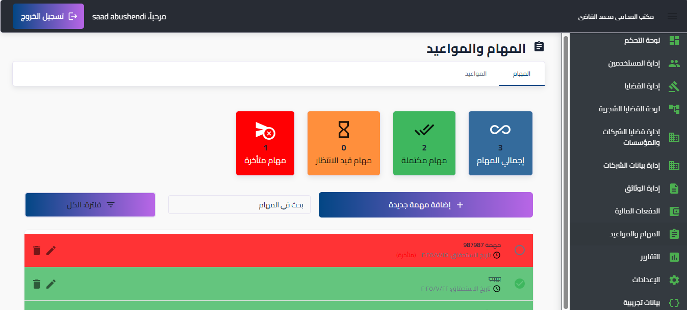
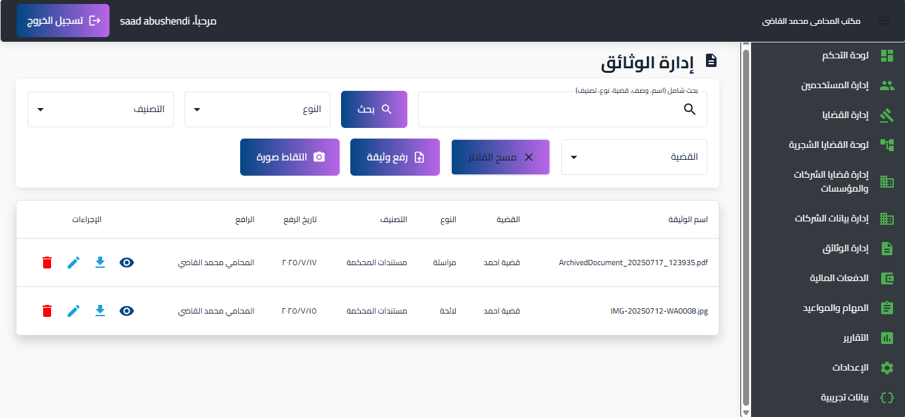
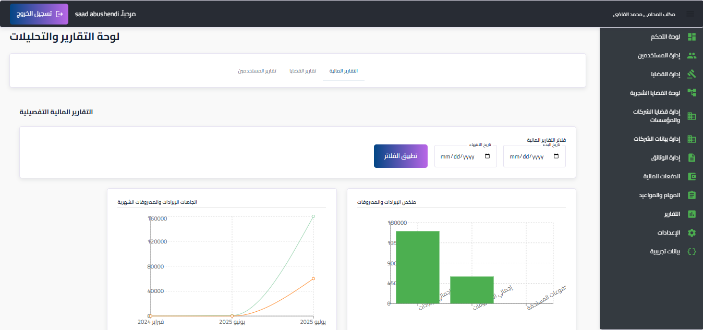
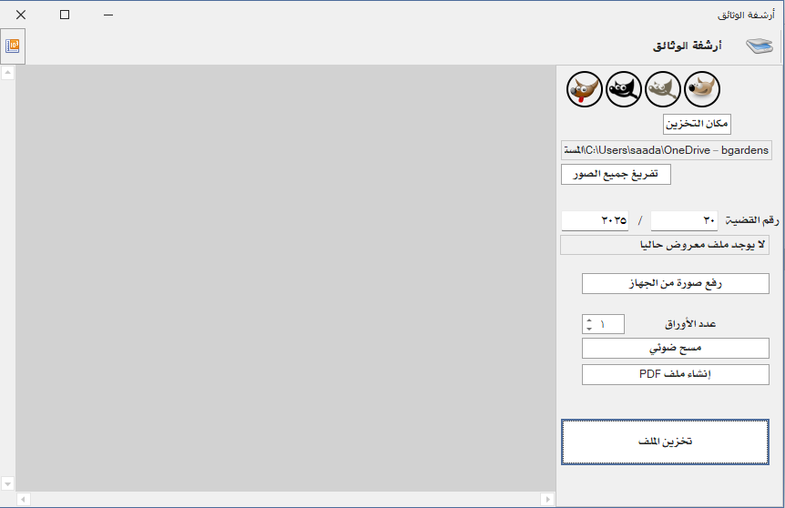

حلول رقمية متكاملة لإدارة مكاتب المحاماة العصرية
منصة المحامي الشاملة هي نظام إلكتروني متقدم مصمم خصيصًا لتلبية الاحتياجات المتزايدة لمكاتب المحاماة الحديثة والمحامين الأفراد. توفر المنصة مجموعة واسعة من الأدوات والميزات التي تهدف إلى تبسيط العمليات اليومية، تعزيز الإنتاجية، وتحسين إدارة القضايا والوثائق والمعاملات المالية بشكل فعال وآمن.
اكتشف المميزات

الميزات الرئيسية للبرنامج
لوحة تحكم ذكية وشاملة
- نظرة عامة فورية على أهم المؤشرات (القضايا النشطة والمغلقة، المهام المعلقة، المستحقات المالية).
- رسوم بيانية تفاعلية لتوزيع حالة القضايا والملخص المالي لسهولة التحليل.
- عرض سريع للجلسات والمواعيد القادمة والمهام المعلقة.
إدارة قضايا مرنة ومتكاملة
- نظام شامل لإضافة وتعديل وحذف القضايا العادية وقضايا الشركات والمؤسسات.
- إمكانية ربط القضايا بجهات متعددة (عملاء، خصوم، محامين) وتفاصيل المحاكم وأنواع القضايا.
- وظائف بحث وتصفية متقدمة حسب حالة القضية، المحامي، أو معلومات الأطراف.
- عرض تفصيلي للقضايا المتداخلة والمرتبطة لسهولة التتبع.
- دعم لطباعة التقارير وتصديرها إلى صيغة PDF مباشرة من جداول القضايا.
- عرض بيانات القضايا المالية وقضايا الشركات في هيكل شجري لتنظيم وتتبع سهل.
إدارة مالية دقيقة
- تسجيل وتتبع الدفعات الواردة والمصروفات الصادرة والمعاملات المستحقة.
- ملخص مالي يعرض إجمالي الإيرادات والمصروفات وصافي الرصيد والمبالغ المستحقة للتحصيل.
- فلاتر وبحث شاملة لتسهيل العثور على المعاملات المالية.
- تصنيفات محددة للدفعات والمصروفات لتحليل مالي دقيق.
إدارة المهام والمواعيد الفعالة
- نظام لتتبع المهام مع حالات "معلقة"، "قيد التنفيذ"، و"مكتملة"، وتحديد الأولويات وتواريخ الاستحقاق.
- جدولة المواعيد وتعيينها للمحامين المعنيين مع تفاصيل القضية والموقع.
- ملخصات سريعة لعدد المهام المكتملة والمعلقة والمتأخرة، بالإضافة إلى المواعيد القادمة والسابقة.
إدارة وثائق متطورة
- قدرة على رفع الوثائق بأنواعها وتصنيفها وربطها بالقضايا.
- دعم لالتقاط الصور مباشرة عبر الكاميرا، مع أدوات مدمجة لقص الصور وتطبيق الفلاتر (أبيض وأسود، تدرج رمادي).
- وظيفة السحب والإفلات لسهولة رفع الملفات.
- بحث وفلترة شاملة للوثائق حسب الاسم والوصف والنوع والتصنيف والقضية المرتبطة.
إدارة مستخدمين وصلاحيات قوية
- نظام أدوار وصلاحيات دقيق (Role-Based Access Control) يضمن التحكم الكامل في وصول المستخدمين للميزات والبيانات.
- تحديد أدوار مثل "مدير نظام"، "مدير مكتب"، "محامي"، و"سكرتير"، مع صلاحيات مخصصة لكل دور.
- إدارة حالات قبول المستخدمين الجدد (قيد الانتظار، مقبول، مرفوض).
تقارير وتحليلات معمقة
- تقارير مالية تفصيلية تعرض ملخصات للإيرادات والمصروفات، واتجاهات شهرية، وتوزيع المصروفات حسب الفئة.
- تقارير خاصة بالقضايا تظهر توزيع القضايا حسب الحالة والنوع.
- رسوم بيانية جذابة وتفاعلية لمساعدة المستخدمين على فهم البيانات بسرعة.
إعدادات عامة سهلة الاستخدام
- إمكانية تخصيص رمز العملة المستخدم في جميع أنحاء التطبيق.
- واجهة لتعديل الصلاحيات الخاصة بكل دور بسهولة.
بيانات تجريبية لسهولة البدء
- أدوات مدمجة لإضافة مجموعات كاملة من البيانات التجريبية (أدوار، محاكم، عملاء، قضايا، معاملات، جلسات، شركات) لغايات العرض أو التطوير.
نقاط القوة والمزايا التنافسية
بنية تقنية حديثة وقوية (Firebase & React)
- يعتمد البرنامج على React في الواجهة الأمامية، مما يوفر تجربة مستخدم سريعة وتفاعلية.
- يستخدم Firebase كخدمة خلفية (Backend-as-a-Service)، بما في ذلك Firestore لقاعدة البيانات في الوقت الفعلي، Firebase Authentication للمصادقة القوية، وFirebase Storage لتخزين الوثائق، وCloud Functions للمنطق الخلفي، مما يضمن قابلية التوسع والأمان وتقليل تكاليف الصيانة.
- الاعتماد على Material-UI لتصميم واجهة المستخدم يضمن تصميمًا عصريًا ومتجاوبًا (Responsive Design) يعمل بسلاسة على مختلف الأجهزة.
تجربة مستخدم محسّنة (UX/UI)
- واجهة مستخدم بديهية وواضحة: تصميم يراعي سهولة الاستخدام، مع أيقونات معبرة وتنظيم منطقي للمعلومات.
- دعم كامل للغة العربية (RTL): تم بناء التطبيق بالكامل لدعم اللغة العربية من حيث الاتجاه والتنسيق، مما يجعله مناسبًا تمامًا للمستخدمين العرب.
- تحديثات فورية: بفضل Firestore، يتم تحديث البيانات في الوقت الفعلي عبر التطبيق، مما يضمن حصول المستخدمين دائمًا على أحدث المعلومات.
أمان ومرونة في الصلاحيات
- نظام صلاحيات مفصل: يتيح للمسؤولين التحكم بدقة في ما يمكن لكل مستخدم رؤيته أو فعله، مما يعزز الأمان ويضمن خصوصية البيانات الحساسة.
- تحكم في الوصول للملفات: صلاحيات محددة لرفع وتعديل وحذف وعرض الوثائق.
كفاءة في التعامل مع البيانات
- تحميل البيانات بكفاءة: استخدام "lazy loading" للمكونات الكبيرة و"debouncing" لحقول البحث، بالإضافة إلى تقنيات التحميل اللانهائي للبيانات (pagination with startAfter) لتحسين الأداء عند التعامل مع كميات كبيرة من المعلومات.
- تخزين آمن للوثائق: استخدام Firebase Storage لتخزين الوثائق بشكل موثوق وآمن.
أدوات تحليلية قوية
- تقارير ورسوم بيانية ذكية: توفر تحليلات مرئية سهلة الفهم حول الأداء المالي وحالة القضايا، مما يساعد في اتخاذ قرارات مبنية على البيانات.
- عرض البيانات الشجري: طريقة فريدة لتنظيم وعرض البيانات المعقدة (القضايا، المعاملات المالية، قضايا الشركات) في هيكل شجري منطقي، مما يسهل التنقل والفهم.
لماذا تختار منصة المحامي الشاملة؟
منصة المحامي الشاملة هي استثمار في مستقبل مكتبك القانوني. بفضل تصميمها الحديث، وميزاتها الشاملة، وبنيتها التحتية القوية، ستساعدك المنصة على:
- زيادة الإنتاجية: تبسيط العمليات وتوفير الوقت للمحامين والموظفين.
- تحسين الدقة: تقليل الأخطاء البشرية في إدارة البيانات المالية والقانونية.
- تعزيز الأمان: حماية معلوماتك الحساسة من خلال نظام صلاحيات متقدم.
- اتخاذ قرارات أفضل: بفضل التقارير والتحليلات الشاملة التي توفرها المنصة.
- تقديم خدمة عملاء استثنائية: تنظيم معلومات العملاء والقضايا يتيح استجابة أسرع وأكثر فعالية.
معرض الصور








فيديو توضيحي للمنصة
اكتشف المزيد عن مميزات المنصة من خلال الفيديو التوضيحي الشامل.
شاهد الفيديو على Canvaجاهز لترقية مكتبك القانوني؟
اكتشف كيف يمكن لمنصة المحامي الشاملة أن تحدث ثورة في سير عملك. تواصل معنا اليوم للحصول على عرض توضيحي مجاني!